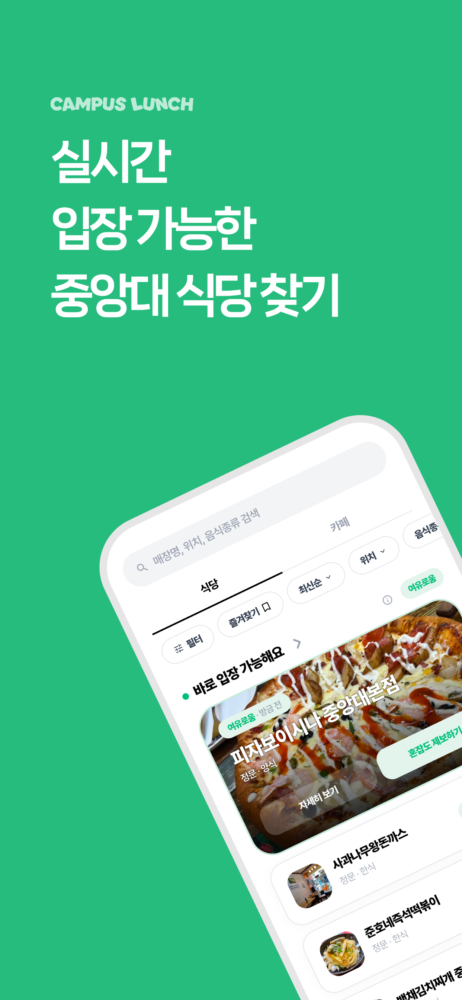
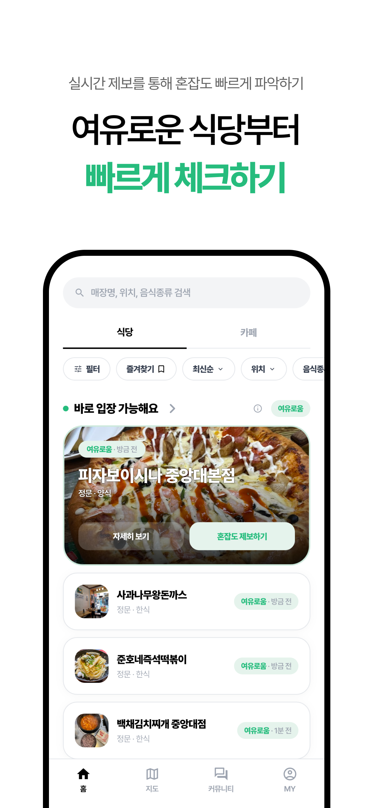
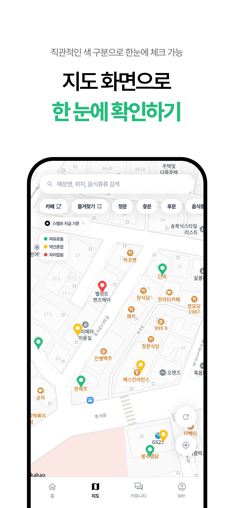
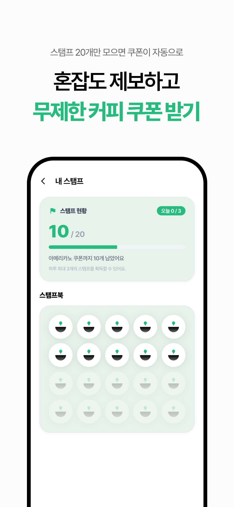
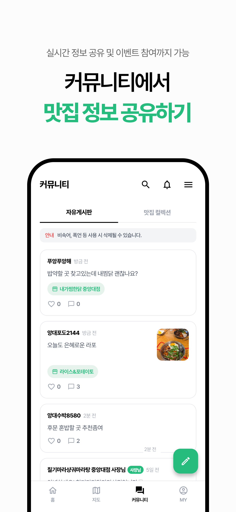
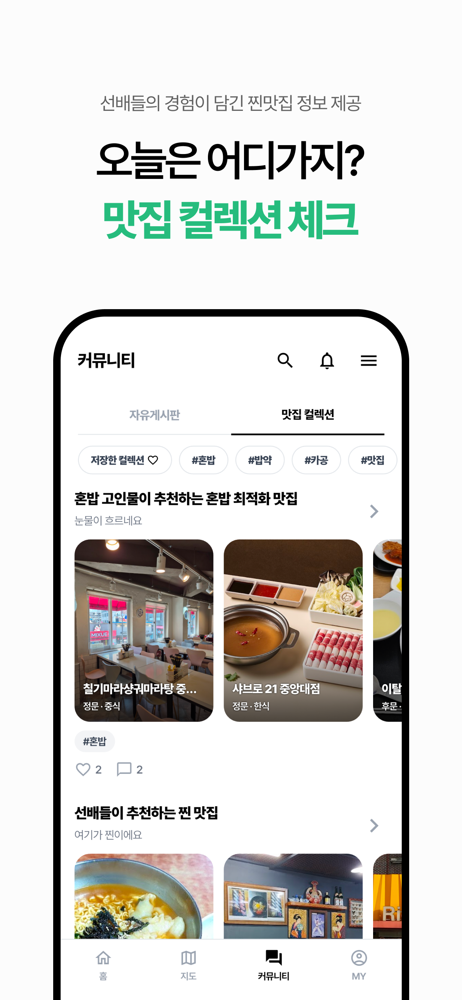

대학 식당가 혼잡도 앱 '캠퍼스런치' 출시
기획부터 UI/UX 디자인, 프론트엔드까지







[문제 검증]
학교 주변 식당 이용자 77명 대상 설문조사 결과, 93.2%가 혼잡으로 방문을 포기한 경험이 있었고 92.2%가 실시간 혼잡도 서비스 이용 의향을 밝혀 실제 수요를 확인
일부 매장은 대기가 발생하는 동시에 주변 매장엔 빈 좌석이 남는 불균형에 주목
[포지셔닝]
네이버지도·카카오맵은 위치·리뷰 등 탐색 정보에, 캐치테이블·테이블링은 일부 제휴 매장에 집중한다는 점을 파악
좁은 반경에 수요가 몰리는 대학 상권의 특수성을 고려해, 상권 전체의 '지금 입장 가능 여부'를 비교하는 데서 캠퍼스런치만의 자리를 찾음
[UX 설계]
FGI에서 학생 제보만으론 신뢰도 확보가 어렵다는 점을 확인해 사장님 직접 제보 기능을 설계하고 사장님 매장 관리 기능을 추가
보상이 있으면 지속적으로 제보하겠다는 설문조사 응답(94.8%)을 근거로 스탬프형 리워드를 설계해 제보를 유도
이외에도 지속적으로 유저 베타 테스트를 진행하고 피드백을 반영하며 사용자 편의성을 개선해나감
이탈 방지와 앱 내 체류 시간 증대를 고려해 자유게시판과 맛집 컬렉션 기능을 추가해 서비스 영역을 확대
[브랜딩 및 디자인]
서비스 톤에 맞는 키컬러와 로고 등 브랜드 아이덴티티를 직접 설계하고, 스플래시·온보딩·프로모션 페이지 등을 Figma로 디자인 후 구현
배달의민족, 당근, 캐치테이블 등을 레퍼런스로 UI를 지속 점검
[구현]
필요한 경우 Figma로 화면을 설계하고, 대부분은 Claude Code로 직접 구현하며 수시로 확인하고 다듬는 방식으로 작업
Flutter/Supabase 기반으로 개발해 iOS 정식 출시 완료, Android 출시 준비 중
제보 데이터가 축적되면 AI 기반 혼잡도 예측 기능도 추가할 예정